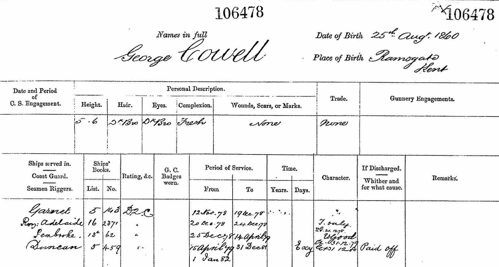
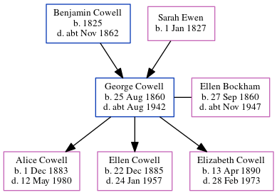

George Henry Cowell 1860 - c1942
[ Home ] | [ Calendar ] | [ Surnames Index ] | [ Census Index ] | [ Family History ]An army ordnance depot foreman and the child of Benjamin Cowell (a mariner) and Sarah Ewen (a needlewoman), George Cowell, the second cousin three-times-removed on the mother's side of Nigel Horne, was born in Ramsgate, Kent, England on Aug 25, 18601, was baptized there at St George's Church, Church Hill on Nov 25, 1860 and married Ellen Bockham (with whom he had 3 children: Alice Sarah, Ellen Martha and Elizabeth Mabel) in St. Mary's Church, Chatham, Kent, England on Apr 8, 18833.
During his life, he was living at Belle Vue Hill in Ramsgate on Apr 7, 18619; at 2 Rodney Street in Ramsgate on Apr 2, 18717; at Maidstone Road, Rochester, Kent on Apr 5, 18916; at 1 Quarters, Fort Clarence, Rochester, Kent on Mar 31, 19015; and at 186 Castle Road in Chatham on Sep 29, 19398 which is where he died c. Aug 19422. On Nov 12, 1878 he was serving in the navy (Royal Navy).He was buried at Maidstone Road Cemetery, Chatham on Sep 26, 19424.
Parents
- Benjamin was born in 1825
- Sarah was born on Jan 1, 1827
Children
- Alice Sarah was born on Dec 1, 1883
- Ellen Martha was born on Dec 22, 1885
- Elizabeth Mabel was born on Apr 13, 1890
Citations
- England & Wales births 1837-2006 - Findmypast
- England & Wales deaths 1837-2007 - Findmypast
- England & Wales marriages 1837-2008 - Findmypast
- Kent Burials - Findmypast
- 1901 England, Wales & Scotland Census - Findmypast (was age 40 and the head of the household)
- 1891 England, Wales & Scotland Census - Findmypast (was age 30 and the head of the household)
- 1871 England, Wales & Scotland Census - Findmypast (was age 10 and the son of the head of the household)
- 1939 Register - Findmypast (was recorded at this address)
- 1861 England, Wales & Scotland Census - Findmypast (was age 0 and the son of the head of the household)
Media
George Cowell - Naval Record

1901 England, Wales & Scotland Census - GBC/1901/0005415326
England & Wales births 1837-2006 - BMD/B/1860/3/AZ/000224/028
1871 England, Wales & Scotland Census - GBC/1871/0014299390
England & Wales deaths 1837-2007 - BMD/D/1942/3/AZ/000161/023
England & Wales marriages 1837-2008 - BMD/M/1883/2/AZ/000059/080
England Marriages 1538-1973 - R_845074092
1939 Register - TNA/R39/1691/1691E/006/28
1861 England, Wales & Scotland Census - GBC/1861/0003537006
1911 England, Wales & Scotland Census Transcription - GBC-1911-RG14-03888-0445-1
Kent marriages and banns - PRS/MEDWAY/MAR/0026960/1
Kent Burials - KENT/FHS/BUR/CIVIL/012226
England Births & Baptisms 1538-1975 - R_884616503
Family Tree
Generated by ged2site. Last updated on Jun 11, 2024